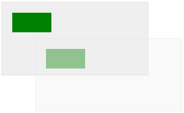

HTML5 canvas translate() 方法
实例
在位置 (10,10) 处绘制一个矩形，将新的 (0,0) 位置设置为 (70,70)。再次绘制新的矩形（请注意现在矩形从位置 (80,80) 开始绘制）：
JavaScript:
var c=document.getElementById("myCanvas");
var ctx=c.getContext("2d");
ctx.fillRect(10,10,100,50);
ctx.translate(70,70);
ctx.fillRect(10,10,100,50);
定义和用法
translate() 方法重新映射画布上的 (0,0) 位置。
注释：当您在 translate() 之后调用诸如 fillRect() 之类的方法时，值会添加到 x 和 y 坐标值上。
JavaScript 语法：
context.translate(x,y);
参数值
| 参数 | 描述 |
|---|---|
| x | 添加到水平坐标（x）上的值 |
| y | 添加到垂直坐标（y）上的值 |